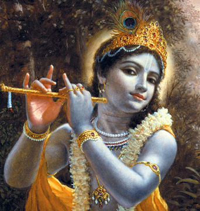

Welcome to ABMMM Hostel,
Gulbarga
Welcome to ABMMM Hostel,
Gulbarga


ಪಲಯಾಚ್ಯುತ ಪಲಯಾಜಿತ ಪಾಲಯ ಕಾಮಲಾಲಯ,
ಲೀಲಯ ದ್ರುತ ಭೂಧರಂಬೂರುಹೊಧ್ರ ಸ್ವಜನೋಧರ ||ಪ||
ಮಧ್ವ ಮಾನಸ ಪದ್ಮ ಭಾನು ಸಮಂ ಸ್ಮರ ಪ್ರತಿಮಂ(ಸಂ) ಸ್ಮರ
ಸ್ನಿಗ್ಧ ನಿರ್ಮಲ ಸೀದ್ ಕಾಂತಿಲ ಸನ್ಮುಖಂ ಕರೂಣೊಂ್ಮೂಖಾಂ್
ಹೃಢ್ಯ ಕಂಭು ಸಮಾನ ಕಂಧರಾಮಕ್ಷಯಂ ದುರಿತಾಕ್ಷಯಂ
ಸ್ನಿಗ್ಧ ಸಂಸ್ತುತ ರೊಪ್ಯ ಪೀತ ಕೃತಲಯಂ ಹರಿಮಳಯಂ ||1||
ಅಂಗಾಢಾಧಿ ಸುಶೋಭಿ ಪಾನಿ ಯುಗೆನ ಸಂಕ್ಷುಭಿತೈನಸಂ
ತುಂಗ ಮಲ್ಯ ಮಣೀಂದ್ರ ಹರ ಸರೊರಸಂ ಖಳ ನೆರಸಂ
ಮಂಗಳಪ್ರಧ ಮಂದ ಧಹಾಮ ವಿರಾಜಿತಂ ಭಜಾತಾಜಿತಂ
ತಾಂ ಗ್ರೆನಾ ವರ ರೊಪ್ಯ ಪೀತ ಕೃತಲಯಂ ಹರಿಮಳಯಂ ||2||
ಪೀನ ರಮ್ಯಾ ತನುಧರಂ ಭಜ ಹೇ ಮನ ಶುಭ ಹೇ ಮನ
ಸ್ವಾನುಭವ ನಿಧರ್ಸನಾಯ ಡಿಸಂತ ಮರ್ಧಿಸು ಸಂತಮಂ
ಆಣತೋಸ್ಮಿ ನಿಜರ್ಜುನ ಪ್ರಿಯಾ ಸಾಧಕಂ ಖಲಭಾಧಕಂ
ಹೀನಾತೋಜಿಜ್ಜತಾರುಪ್ಯ ಪೀತ ಕೃತಲಯಂ ಹರಿಮಳಯಂ ||3||
ಹೇಮಾ ಮಾಲೀಕ ಕಿಂಕಿಣಿ ಮಾಲೀಕರಸಂಚಿತಂ ತಮವಾಂಚಿತಂ
ರತ್ನ ಕಾಂಚನ ಚಿತ್ರ ವಸ್ತ್ರಕಾತೀಂ ಘನ ಪ್ರಭಯಾ ಘನಂ
ಕಮ್ರ ನಾಗ ಕರೋಪ ಮೊರು ಮನ ಮಯಂ ಶುಭಧೀ ಮಯಂ
ನೌಮ್ಯಹಂ ವರ ರೊಪ್ಯ ಪೀತ ಕೃತಲಯಂ ಹರಿಮಳಯಂ ||4||
ವ್ರತ ಜಾನು ಮನೋಜ್ಞ ಜಂಗ ಮಮೊಹಾಧಂ ಪರಮೋಹಾಧಂ
ರತ್ನ ಕಲ್ಪ ನಖತ್ವೀಷ ಹರತ ಹೃತ್ತಮಸ್ತತಿಮೂತಮಂ
ಪ್ರತ್ಯಹಂ ರಚಿತಾರ್ಚನಂ ರಾಮಾಯ ಸ್ವಯಾಗತಾಯ ಸ್ವಯಂ
ಚಿತ ಚಿಂತ್ಯ ರೊಪ್ಯ ಪೀತ ಕೃತಲಯಂ ಹರಿಮಳಯಂ ||5||
ಚಾರು ಪದ ಸರೋಜ ಯುಗ್ಮ ರುಚ ಅಮರೋಚಯಾಚಮಾರೋ
ಧರ ಮೋರ್ಧ್ ಆ ಜಾಭಾರ ಮಂಡಲ ರಾಂಚಕಂ ಕಲಿ ಭಂಚಕಂ
ವೀರಥೋತುಚಿತ ಭೂಷಣಂ ವರ ನೂಪುಂ ಸ್ವಾತನುಪರಂ
ಧಾರಯಾತ್ಮಣಿ ರೊಪ್ಯ ಪೀತ ಕೃತಲಯಂ ಹರಿಮಳಯಂ ||6||
ಸುಷ್ಕ ವಧಿ ಮನೋ ಆತಿಢೂರ ತರಾಗಮೋತ್ಸವ ದಗಮಂ
ಸಾಥ್ ಕವೀಂದ್ರ ವಚೋ ವಿಳಾಸ ಮಹೋಧಾಂ ಮಾಹಿತೋಧಾಯಂ
ಲಕ್ಷ್ಯಮೀ ಯತೀಸ್ವರೈ ಕೃತ ಪೂಜನಂ ಗುಣ ಭಜನಂ
ದ್ಧಿಕೃತೋಪಮ ರೊಪ್ಯ ಪೀತ ಕೃತಲಯಂ ಹರಿಮಳಯಂ ||7||
ನಾರದ ಪ್ರಿಯಮಾವಿಷಂಭೂರುಹೇಕ್ಷನಂ ನಿಜ ಲಕ್ಷಣಂ
ತರಕೋಪಮ ಚಾರು ಧೀಪ ಛಾಯಂತಾರೆ ಗತ ಚಿಂತಾರೆ
ಧೀರ ಮಾನಸ ಪೂರ್ಣ ಚಂದ್ರ ಸಮಾನಮಚ್ಯುತಮಾನಾಮ
ಧ್ವರಕೋಪಮ ರೊಪ್ಯ ಪೀತ ಕೃತಲಯಂ ಹರಿಮಳಯಂ ||8||
ರೊಪ್ಯಪೀತ ಕೃತಳಯಸ್ಯ ಹೆರ್ ಪ್ರಿಯಂ ದುರಿತಾಪ್ರಿಯಂ
ತದ್ ಪದರ್ಚಕ ವಧಿ ರಾಜ ಯಾತಿರಿತಂ ಗುಣ ಪೂರಿತಂ
ಗೋಪ್ಯಮಾಷ್ಟಕಂ ಎಡತುಚಮುಧೆ ಮಾಮಸ್ತಿವಾಹ ನಿರ್ಮಮ
ಪ್ರಾಪ್ಯ ಶುಧ ಫಲಯ ತತ್ರ ಸುಕೋಮಲಂ ಹೃತಧೀಮಲಂ